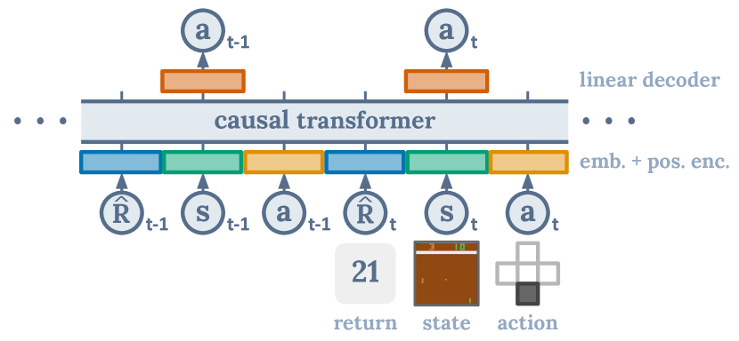
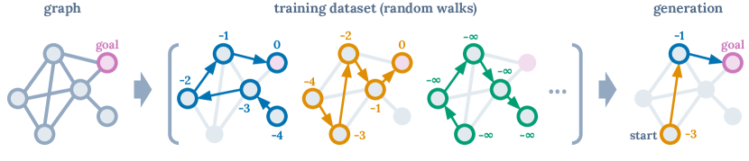
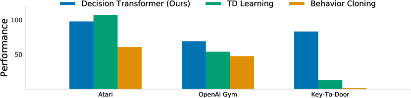
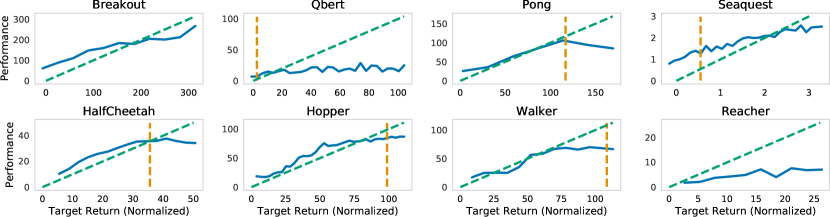
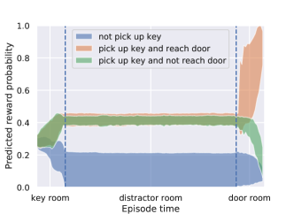
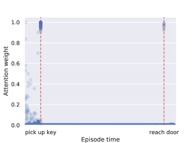
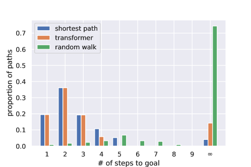

초록
우리는 강화학습(RL)을 시퀀스 모델링 문제로 추상화하는 프레임워크를 소개한다. 이를 통해 트랜스포머(Transformer) 아키텍처의 단순성과 확장성, 그리고 GPT-x 및 BERT와 같은 언어 모델링 분야의 관련 발전 사항들을 활용할 수 있다. 특히, 우리는 강화학습 문제를 조건부 시퀀스 모델링으로 캐스팅하는 아키텍처인 Decision Transformer를 제시한다. 가치 함수를 피팅하거나 정책 그래디언트를 계산하는 기존의 강화학습 접근 방식과 달리, Decision Transformer는 인과적으로 마스킹된 트랜스포머(causally masked Transformer)를 활용하여 단순히 최적의 행동을 출력한다. autoregressive 모델에 원하는 리턴(보상), 과거 상태, 행동을 조건으로 부여함으로써, 우리의 Decision Transformer 모델은 원하는 리턴을 달성하는 미래의 행동을 생성할 수 있다. 단순함에도 불구하고, Decision Transformer는 Atari, OpenAI Gym, Key-to-Door 태스크에서 최첨단 모델 프리 오프라인 강화학습(model-free offline RL) 베이스라인의 성능과 대등하거나 이를 능가한다.

1 서론
최근 연구들은 트랜스포머 [1]가 언어에서의 효과적인 제로샷 일반화 [2] 및 분포 외(out-of-distribution) 이미지 생성 [3]을 포함하여, 고차원 시맨틱 개념 분포를 대규모로 모델링할 수 있음을 보여주었다. 이러한 모델들의 성공적인 적용 사례가 다양하다는 점에 착안하여, 우리는 이를 강화학습(RL)으로 공식화되는 순차적 의사결정 문제에 적용하는 방안을 검토하고자 한다. 트랜스포머를 전통적인 강화학습 알고리즘 내 구성 요소를 위한 아키텍처적 선택으로 사용한 기존 연구 [4, 5]와 달리, 우리는 생성적 궤적 모델링(generative trajectory modeling) — 즉, 상태, 행동, 보상 시퀀스의 결합 분포를 모델링하는 것 — 이 기존의 강화학습 알고리즘을 대체할 수 있는지 연구하고자 한다.
우리는 다음과 같은 패러다임의 전환을 고려한다. 시간차(TD) 학습 [6]과 같은 기존의 강화학습 알고리즘을 통해 정책을 학습시키는 대신, 시퀀스 모델링 목적 함수를 사용하여 수집된 경험 데이터로 트랜스포머 모델을 학습시킨다. 이를 통해 장기적 신용 할당(long term credit assignment)을 위한 부트스트래핑(bootstrapping)의 필요성을 우회할 수 있으며, 결과적으로 강화학습을 불안정하게 만드는 것으로 알려진 "죽음의 삼중주(deadly triad)" [6] 중 하나를 피할 수 있다. 또한, 일반적으로 TD 학습에서 수행되는 미래 보상에 대한 할인(discounting)의 필요성을 피할 수 있어, 바람직하지 않은 근시안적 행동이 유발되는 것을 방지한다. 나아가, 트랜스포머 모델의 안정적인 학습을 연구한 방대한 연구 결과를 활용하여, 쉽게 확장 가능하고 언어 및 비전 분야에서 널리 사용되는 기존 트랜스포머 프레임워크를 그대로 활용할 수 있다.
긴 시퀀스를 모델링하는 입증된 능력 외에도 트랜스포머는 다른 장점들을 가지고 있다. 보상을 느리게 전파하고 "방해(distractor)" 신호에 취약한 벨만 백업(Bellman backups) [7]과 대조적으로, 트랜스포머는 자가 주의 집중(self-attention)을 통해 직접 신용 할당을 수행할 수 있다. 이를 통해 트랜스포머는 희소하거나 방해 요소가 되는 보상이 존재하는 상황에서도 여전히 효과적으로 작동할 수 있다. 마지막으로, 실증적 증거는 트랜스포머 모델링 접근 방식이 광범위한 행동 분포를 모델링할 수 있어 더 나은 일반화 및 전이(transfer) [3]를 가능하게 함을 시사한다.
우리는 에이전트에게 최적이 아닌 데이터로부터 정책을 학습하도록 요구하는 — 즉, 고정되고 제한된 경험으로부터 최대한 효과적인 행동을 생성해 내는 — 오프라인 강화학습(offline RL)을 고려하여 우리의 가설을 탐색한다. 이 태스크는 오류 전파 및 가치 과대평가 [8]로 인해 전통적으로 까다로운 과제이다. 그러나 시퀀스 모델링 목적 함수로 학습할 때는 매우 자연스러운 태스크가 된다. 상태, 행동, 리턴 시퀀스에 대해 autoregressive 모델을 학습시킴으로써, 정책 샘플링 문제를 autoregressive 생성 모델링 문제로 환원한다. 우리는 원하는 리턴 토큰을 선택하여 정책의 전문성 — 어떤 "스킬"을 호출할지 — 을 지정할 수 있으며, 이는 생성을 위한 프롬프트 역할을 한다.

설명용 예시. 우리의 제안에 대한 직관을 얻기 위해, 강화학습 문제로 제기될 수 있는 유향 그래프에서의 최단 경로 찾기 태스크를 고려해 보자. 보상은 에이전트가 목표 노드에 있을 때 이고, 그렇지 않으면 이다. 우리는 남은 리턴(미래 보상의 합), 상태, 행동 시퀀스에서 다음 토큰을 예측하도록 GPT [9] 모델을 학습시킨다. 전문가의 시연 없이 무작위 보행 데이터로만 학습하더라도, 테스트 시점에 가능한 가장 높은 리턴을 생성하도록 사전 확률(prior)을 추가하고(자세한 내용과 실증적 결과는 부록 참조), 이후 조건화를 통해 해당하는 행동 시퀀스를 생성함으로써 최적의 궤적을 생성할 수 있다. 이처럼 시퀀스 모델링 도구와 사후적 리턴(hindsight return) 정보를 결합함으로써, 동적 계획법(dynamic programming) 없이도 정책 개선을 달성한다.
이러한 관찰에 힘입어, 우리는 GPT 아키텍처를 사용하여 궤적을 autoregressive하게 모델링하는 Decision Transformer를 제안한다(그림 1에 표시됨). 우리는 Atari [10], OpenAI Gym [11], Key-to-Door [12] 환경의 오프라인 강화학습 벤치마크에서 Decision Transformer를 평가함으로써 시퀀스 모델링이 정책 최적화를 수행할 수 있는지 연구한다. 우리는 동적 계획법을 사용하지 않고도 Decision Transformer가 최첨단 모델 프리 오프라인 강화학습 알고리즘 [13, 14]의 성능과 대등하거나 이를 능가함을 보여준다. 나아가, 장기적 신용 할당이 요구되는 태스크에서 Decision Transformer는 강화학습 베이스라인들을 유능하게 능가한다. 본 연구를 통해 우리는 시퀀스 모델링 및 트랜스포머를 강화학습과 연결하고자 하며, 시퀀스 모델링이 강화학습을 위한 강력한 알고리즘 패러다임으로 기능하기를 기대한다.
2 배경지식
2.1 오프라인 강화학습
우리는 튜플 (, , , )로 기술되는 마르코프 결정 과정(MDP)에서의 학습을 고려한다. MDP 튜플은 상태 , 행동 , 전이 역학(transition dynamics) , 보상 함수 로 구성된다. 우리는 타임스텝 에서의 상태, 행동, 보상을 각각 , , 으로 나타낸다. 궤적은 상태, 행동, 보상의 시퀀스인 로 구성된다. 타임스텝 에서 궤적의 리턴 은 해당 타임스텝부터의 미래 보상의 합이다. 강화학습의 목표는 MDP에서 기대 리턴 을 최대화하는 정책을 학습하는 것이다. 오프라인 강화학습에서는 환경과의 상호작용을 통해 데이터를 얻는 대신, 임의의 정책들의 궤적 롤아웃(rollouts)으로 구성된 고정되고 제한된 데이터셋에만 접근할 수 있다. 이 설정은 에이전트가 환경을 탐색하고 추가적인 피드백을 수집할 수 있는 능력을 제거하므로 더 어렵다.
2.2 트랜스포머
트랜스포머는 시퀀스 데이터를 효율적으로 모델링하기 위한 아키텍처로 Vaswani et al. [1]에 의해 제안되었다. 이 모델들은 잔차 연결(residual connections)이 있는 적층된 자가 주의 집중(self-attention) 레이어들로 구성된다. 각 자가 주의 집중 레이어는 고유한 입력 토큰에 해당하는 개의 임베딩 을 입력받아, 입력 차원을 유지하면서 개의 임베딩 을 출력한다. 번째 토큰은 선형 변환을 통해 키(key) , 쿼리(query) , 값(value) 로 매핑된다. 자가 주의 집중 레이어의 번째 출력은 쿼리 와 다른 키들 사이의 정규화된 내적 값으로 값들 을 가중 평균하여 제공된다:
| (1) |
나중에 살펴보겠지만, 이는 레이어가 쿼리와 키 벡터의 유사성(내적 최대화)을 통해 상태-리턴 연관성을 암묵적으로 형성함으로써 "신용"을 할당할 수 있게 한다. 본 연구에서는 autoregressive 생성을 가능하게 하기 위해 인과적 자가 주의 집중 마스크(causal self-attention mask)로 트랜스포머 아키텍처를 수정한 GPT 아키텍처 [9]를 사용하며, 이는 개 토큰에 대한 합산/소프트맥스를 시퀀스의 이전 토큰들()로만 대체한다. 그 외의 아키텍처 세부 사항은 원본 논문들을 참고하도록 한다.
3 방법 (Method)
본 섹션에서는 그림 1과 알고리즘 1에 요약된 바와 같이, 트랜스포머 아키텍처를 최소한으로 수정하여 궤적을 자기회귀(autoregressively) 방식으로 모델링하는 디시전 트랜스포머(Decision Transformer)를 제시한다.
궤적 표현 (Trajectory representation). 궤적 표현을 선택할 때 가장 중요한 요구사항은 트랜스포머가 의미 있는 패턴을 학습할 수 있어야 하며, 테스트 시점에 행동을 조건부로 생성할 수 있어야 한다는 점이다. 모델이 과거의 보상이 아닌 미래의 목표 리턴(return)을 기반으로 행동을 생성하도록 하고 싶기 때문에, 보상을 모델링하는 것은 간단하지 않다. 따라서 보상을 직접 입력하는 대신, 모델에 남은 리턴(returns-to-go) 을 입력한다. 이는 자기회귀 학습 및 생성에 적합한 다음과 같은 궤적 표현으로 이어진다:
| (2) |
테스트 시점에는 생성을 시작하기 위한 조건부 정보로서 환경의 시작 상태뿐만 아니라 원하는 성능(예: 성공의 경우 1, 실패의 경우 0)을 지정할 수 있다. 현재 상태에 대해 생성된 행동을 실행한 후, 달성된 보상만큼 목표 리턴을 차감하고 에피소드가 종료될 때까지 이 과정을 반복한다.
아키텍처 (Architecture). 우리는 마지막 개의 타임스텝을 디시전 트랜스포머에 입력하며, 이는 총 개의 토큰(각 모달리티인 남은 리턴, 상태, 행동에 대해 하나씩)에 해당한다. 토큰 임베딩을 얻기 위해, 각 모달리티에 대해 원시 입력을 임베딩 차원으로 투영하는 선형 레이어를 학습시키고, 이어서 레이어 정규화(layer normalization) [15]를 적용한다. 시각적 입력이 있는 환경의 경우, 상태는 선형 레이어 대신 합성곱 인코더(convolutional encoder)에 입력된다. 추가적으로, 각 타임스텝에 대한 임베딩을 학습하여 각 토큰에 더해준다. 하나의 타임스텝이 세 개의 토큰에 대응하므로, 이는 트랜스포머에서 사용되는 표준 위치 임베딩(positional embedding)과는 다르다는 점에 유의해야 한다. 그 후 토큰들은 GPT [9] 모델에 의해 처리되며, 이 모델은 자기회귀 모델링을 통해 미래의 행동 토큰을 예측한다.
학습 (Training). 오프라인 궤적 데이터셋이 주어졌을 때, 우리는 데이터셋에서 시퀀스 길이 의 미니배치들을 샘플링한다. 입력 토큰 에 대응하는 예측 헤드는 를 예측하도록 학습된다. 이 예측은 이산형(discrete) 행동의 경우 크로스 엔트로피 손실(cross-entropy loss)을 사용하고, 연속형(continuous) 행동의 경우 평균 제곱 오차(mean-squared error)를 사용하며, 각 타임스텝의 손실을 평균하여 계산한다. 상태나 남은 리턴을 예측하는 것이 성능을 향상시키지는 않는다는 것을 발견했으나, 이는 우리의 프레임워크 내에서 쉽게 허용되며(섹션 5.4에서 보여주듯이) 향후 연구를 위한 흥미로운 주제가 될 것이다.
4 오프라인 강화학습 벤치마크 평가
본 섹션에서는 전용 오프라인 강화학습(RL) 및 모방 학습(imitation learning) 알고리즘과 비교하여 디시전 트랜스포머의 성능을 조사한다. 특히, 우리의 디시전 트랜스포머 아키텍처 역시 근본적으로 모델 프리(model-free) 성격을 띠고 있기 때문에, TD 학습(TD-learning) 기반의 모델 프리 오프라인 강화학습 알고리즘이 주요 비교 대상이다. 나아가 TD 학습은 샘플 효율성 측면에서 강화학습의 지배적인 패러다임이며, 많은 모델 기반(model-based) 강화학습 알고리즘 [16, 17]에서도 서브루틴으로 중요하게 다루어진다. 또한, 우리와 유사하게 우도(likelihood) 기반의 정책 학습 공식을 사용하는 행동 복제(behavior cloning) 및 그 변형들과도 비교한다. 구체적인 알고리즘은 환경에 따라 다르지만, 우리의 비교 동기는 다음과 같다:
- •
-
•
모방 학습 (Imitation learning): 이 체계는 벨만 백업(Bellman backups) 대신 학습에 지도 학습 손실(supervised losses)을 유사하게 사용한다. 여기서는 행동 복제(behavior cloning)를 사용하며, 섹션 5.1에서 더 자세히 논의한다.
우리는 이산형(Atari [10]) 및 연속형(OpenAI Gym [11]) 제어 태스크 모두에서 평가를 진행한다. 전자는 고차원 관측 공간을 포함하며 장기적인 신용 할당(credit assignment)을 요구하는 반면, 후자는 미세한 연속형 제어를 요구하므로 다양한 태스크 세트를 대변한다. 우리의 주요 결과는 그림 3에 요약되어 있으며, 각 도메인에 대한 평균 정규화 성능을 보여준다.

4.1 Atari
Atari 벤치마크 [10]는 고차원 시각적 입력과 행동과 그에 따른 보상 사이의 지연으로 인해 발생하는 신용 할당의 어려움 때문에 까다로운 과제이다. 우리는 Agarwal et al. [13]에 따라 DQN-replay 데이터셋의 모든 샘플 중 1%를 사용하여 우리의 방법을 평가한다. 이는 온라인 DQN 에이전트 [20]가 학습 중에 관측한 5,000만 개의 천이(transition) 중 50만 개에 해당하며, 3개의 시드(seed)에 대한 평균과 표준편차를 보고한다. 우리는 Hafner et al. [21]의 프로토콜을 따라 전문 게이머를 기준으로 점수를 정규화하며, 여기서 100점은 전문 게이머의 점수를, 0점은 무작위 정책을 나타낸다.
| Game | DT (Ours) | CQL | QR-DQN | REM | BC |
|---|---|---|---|---|---|
| Breakout | |||||
| Qbert | |||||
| Pong | |||||
| Seaquest |
우리는 Agarwal et al. [13]에서 평가된 네 가지 Atari 태스크(Breakout, Qbert, Pong, Seaquest)에서 CQL [14], REM [13], QR-DQN [22]과 비교한다. 디시전 트랜스포머의 컨텍스트 길이(context length)는 를 사용한다(Pong의 경우 제외). 또한 디시전 트랜스포머와 동일한 네트워크 아키텍처 및 하이퍼파라미터를 사용하지만 남은 리턴 조건화가 없는 행동 복제(BC)의 성능도 보고한다222이전 연구에서와 같이 을 사용하는 MLP의 사용도 시도해 보았으나, 트랜스포머보다 성능이 떨어짐을 확인했다.. CQL, REM, QR-DQN 베이스라인의 경우, CQL 및 REM 논문에서 수치를 직접 인용하여 보고한다. 결과는 표 1에 나타나 있다. 우리의 방법은 4개 게임 중 3개에서 CQL과 경쟁력 있는 성능을 보이며, 4개 게임 모두에서 REM, QR-DQN, BC보다 우수하거나 대등한 성능을 보인다.
4.2 OpenAI Gym
이 섹션에서는 D4RL 벤치마크 [23]의 연속 제어(continuous control) 태스크들을 고려한다. 또한 벤치마크에 포함되지 않은 2D 리처(reacher) 환경을 추가로 고려하며, D4RL 벤치마크와 유사한 방법론을 사용하여 데이터셋을 생성한다. 리처는 목표 조건부(goal-conditioned) 태스크이며 희소 보상(sparse rewards)을 가지므로, 표준 로코모션(locomotion) 환경(HalfCheetah, Hopper, Walker)과는 다른 설정을 나타낸다. 서로 다른 데이터셋 설정은 아래와 같이 설명된다.
-
1.
Medium: 전문가 정책(expert policy) 점수의 약 3분의 1을 달성하는 "중간(medium)" 정책에 의해 생성된 100만 타임스텝(timesteps).
-
2.
Medium-Replay: 중간 정책의 성능까지 학습된 에이전트의 리플레이 버퍼(replay buffer)(우리 환경에서는 약 2만 5천~40만 타임스텝).
-
3.
Medium-Expert: 중간 정책으로 생성된 100만 타임스텝과 전문가 정책으로 생성된 100만 타임스텝을 연결(concatenate)한 것.
우리는 CQL [14], BEAR [18], BRAC [19], 그리고 AWR [24]과 비교한다. CQL은 가치 비관주의(value pessimism)를 적용한 TD 학습(TD learning)의 한 예시로, 모델 프리 오프라인 강화학습(model-free offline RL)에서 최첨단(state-of-the-art) 성능을 대변한다. 점수는 Fu et al. [23]에 따라 전문가 정책이 100이 되도록 정규화된다. CQL 수치는 원본 논문에서 인용하였고, BC 수치는 우리가 직접 실행하였으며, 다른 방법들은 D4RL 논문에서 인용하였다. 우리의 결과는 표 3에 나타나 있다. Decision Transformer는 대다수의 태스크에서 가장 높은 점수를 달성하며, 나머지 태스크에서도 최첨단 성능과 경쟁할 만한 수준이다.
| Dataset | Environment | DT (Ours) | CQL | BEAR | BRAC-v | AWR | BC |
|---|---|---|---|---|---|---|---|
| Medium-Expert | HalfCheetah | ||||||
| Medium-Expert | Hopper | ||||||
| Medium-Expert | Walker | ||||||
| Medium-Expert | Reacher | - | - | - | |||
| Medium | HalfCheetah | ||||||
| Medium | Hopper | ||||||
| Medium | Walker | ||||||
| Medium | Reacher | - | - | - | |||
| Medium-Replay | HalfCheetah | ||||||
| Medium-Replay | Hopper | ||||||
| Medium-Replay | Walker | ||||||
| Medium-Replay | Reacher | - | - | - | |||
| Average (Without Reacher) | |||||||
| Average (All Settings) | - | - | - | ||||
5 토의(Discussion)
5.1 Decision Transformer는 데이터의 일부 서브셋에 대해 행동 모방(behavior cloning)을 수행하는 것인가?
이 섹션에서는 Decision Transformer가 특정 리턴(return)을 가진 데이터의 일부 서브셋에 대해 모방 학습(imitation learning)을 수행하는 것으로 생각할 수 있는지에 대한 통찰을 얻고자 한다. 이를 조사하기 위해, 우리는 에피소드 리턴 순으로 정렬된 데이터셋의 상위 타임스텝에 대해서만 행동 모방을 실행하는 새로운 방법인 백분위수 행동 모방(Percentile Behavior Cloning, %BC)을 제안한다. 백분위수 은 전체 데이터셋을 학습하는 표준 BC()와 관측된 최상의 궤적만을 모방하는 것() 사이를 보간(interpolate)하며, 더 많은 데이터로 학습하여 더 나은 일반화 성능을 얻는 것과 바람직한 데이터 서브셋에 집중하는 특화된 모델을 학습하는 것 사이의 트레이드오프를 조절한다.
우리는 표 3에서 을 변화시키며 %BC를 Decision Transformer 및 CQL과 비교한 전체 결과를 보여준다. 모방을 위한 최적의 서브셋을 선택하는 유일한 방법은 환경에서의 롤아웃(rollout)을 사용하여 평가하는 것뿐이므로, %BC는 현실적인 접근법이 아니다. 오히려 이는 Decision Transformer의 동작에 대한 통찰을 제공하는 역할을 한다. D4RL 환경처럼 데이터가 풍부할 때, %BC가 다른 오프라인 강화학습 방법들과 대등하거나 더 나은 성능을 보일 수 있음을 발견했다. 대부분의 환경에서 Decision Transformer는 가장 우수한 %BC의 성능과 경쟁할 만한 수준이며, 이는 전체 데이터셋 분포를 학습한 후 특정 서브셋에 집중할 수 있음을 나타낸다.
| Dataset | Environment | DT (Ours) | 10%BC | 25%BC | 40%BC | 100%BC | CQL |
|---|---|---|---|---|---|---|---|
| Medium | HalfCheetah | ||||||
| Medium | Hopper | ||||||
| Medium | Walker | ||||||
| Medium | Reacher | ||||||
| Medium-Replay | HalfCheetah | ||||||
| Medium-Replay | Hopper | ||||||
| Medium-Replay | Walker | ||||||
| Medium-Replay | Reacher | ||||||
| Average | |||||||
반면, 데이터가 적은 환경(예: 리플레이 버퍼의 1%를 데이터셋으로 사용하는 아타리(Atari))을 연구할 때 %BC는 취약하다(표 4에 표시됨). 이는 데이터양이 상대적으로 적은 시나리오에서 Decision Transformer가 데이터셋의 모든 궤적을 사용하여 일반화 성능을 향상시킴으로써 %BC를 능가할 수 있음을 시사한다. 비록 그 궤적들이 리턴 조건화 목표(return conditioning target)와 다를지라도 말이다. 우리의 결과는 Decision Transformer가 단순히 데이터셋의 일부 서브셋에 대해 모방 학습을 수행하는 것보다 더 효과적일 수 있음을 보여준다. 우리가 고려한 태스크에서 Decision Transformer는 최적의 서브셋을 선택해야 하는 번거로움 없이 %BC를 능가하거나 대등한 성능을 보인다.
| Game | DT (Ours) | 10%BC | 25%BC | 40%BC | 100%BC |
|---|---|---|---|---|---|
| Breakout | |||||
| Qbert | |||||
| Pong | |||||
| Seaquest |
5.2 Decision Transformer는 리턴의 분포를 얼마나 잘 모델링하는가?
우리는 원하는 목표 리턴(target return)을 넓은 범위에 걸쳐 변화시키면서 Decision Transformer가 남은 리턴(return-to-go) 토큰을 이해하는 능력을 평가한다. 이를 통해 트랜스포머의 다중 태스크 분포 모델링 능력을 평가한다. 그림 4은 다양한 목표 리턴 값에 대해 에이전트가 평가 에피소드 동안 누적한 평균 샘플링 리턴을 보여준다. 모든 태스크에서 원하는 목표 리턴과 실제 관측된 리턴은 높은 상관관계를 보인다. Pong, HalfCheetah, Walker와 같은 일부 태스크에서 Decision Transformer는 원하는 리턴과 거의 완벽하게 일치하는 궤적을 생성한다(오라클(oracle) 선과의 겹침으로 표시됨). 나아가 Seaquest와 같은 일부 Atari 태스크에서는 데이터셋에 존재하는 최대 에피소드 리턴보다 더 높은 리턴을 Decision Transformer에 프롬프트로 입력할 수 있으며, 이는 Decision Transformer가 때때로 외삽(extrapolation)이 가능함을 보여준다.

5.3 더 긴 컨텍스트 길이(context length)를 사용하면 어떤 이점이 있는가?
이전 상태, 행동, 리턴에 접근하는 것의 중요성을 평가하기 위해, 컨텍스트 길이 에 대해 소거 연구(ablation)를 수행한다. 우리가 적용한 것처럼 프레임 스태킹(frame stacking)을 사용할 때, 강화학습 알고리즘에서는 일반적으로 이전 상태(즉, )만으로도 충분하다고 여겨지기 때문에 이는 흥미로운 분석이다. 표 5는 일 때 Decision Transformer의 성능이 유의미하게 저하됨을 보여주며, 이는 과거 정보가 Atari 게임에 유용함을 나타낸다. 한 가지 가설은 시퀀스 모델링에서처럼 우리가 정책의 분포를 표현할 때, 컨텍스트가 트랜스포머로 하여금 어떤 정책이 행동을 생성했는지 식별할 수 있게 하여 더 나은 학습을 가능하게 하거나 학습 역학(training dynamics)을 개선한다는 것이다.
| Game | DT (Ours) | DT with no context () | |
|---|---|---|---|
| Breakout | |||
| Qbert | |||
| Pong | |||
| Seaquest |
5.4 Decision Transformer는 효과적인 장기 신용 할당(Long-term credit assignment)을 수행하는가?
우리 모델의 장기 신용 할당 능력을 평가하기 위해, 우리는 Mesnard et al. [12]에서 제안된 Key-to-Door 환경의 변형을 고려한다. 이것은 세 가지 단계의 시퀀스로 구성된 그리드 기반 환경이다: (1) 첫 번째 단계에서 에이전트는 열쇠가 있는 방에 배치된다; (2) 그 후, 에이전트는 빈 방에 배치된다; (3) 마지막으로, 에이전트는 문이 있는 방에 배치된다. 에이전트는 세 번째 단계에서 문에 도달할 때 이진 보상(Binary reward)을 받지만, 오직 첫 번째 단계에서 열쇠를 주웠을 때만 보상을 받는다. 이 문제는 에피소드의 시작부터 끝까지 신용을 전파해야 하고 중간에 취해진 행동들을 건너뛰어야 하기 때문에 신용 할당에 있어 매우 어렵다.
우리는 무작위 행동을 적용하여 생성된 궤적 데이터셋으로 학습을 진행하고 표 6에 성공률을 보고한다. 나아가, Key-to-Door 환경의 경우 다른 환경들처럼 고정된 컨텍스트 윈도우를 사용하는 대신 전체 에피소드 길이를 컨텍스트로 사용한다. 사후 판단 리턴(Hindsight return) 정보를 사용하는 방법들, 즉 우리의 Decision Transformer 모델과 %BC(성공한 에피소드로만 학습됨)는 무작위 탐색(Random walk)으로만 학습했음에도 불구하고 거의 최적에 가까운 경로를 생성하며 효과적인 정책을 학습할 수 있다. 반면 TD 학습(CQL)은 관련된 긴 호라이즌(Horizon)에 걸쳐 Q-값을 효과적으로 전파하지 못해 저조한 성능을 보인다.
| Dataset | DT (Ours) | CQL | BC | %BC | Random |
|---|---|---|---|---|---|
| 1K Random Trajectories | |||||
| 10K Random Trajectories |
5.5 트랜스포머는 희소한 보상(Sparse reward) 환경에서 정확한 크리틱(Critic)이 될 수 있는가?
이전 섹션들에서 우리는 Decision Transformer가 효과적인 정책(액터)을 생성할 수 있음을 입증했다. 이제 우리는 트랜스포머 모델이 효과적인 크리틱(Critic)도 될 수 있는지 평가한다. 우리는 Key-to-Door 환경에서 Decision Transformer가 행동 토큰 외에도 리턴 토큰을 출력하도록 수정한다. 추가적으로, 첫 번째 리턴 토큰은 주어지지 않고 대신 예측된다(즉, 모델이 초기 분포 를 학습한다). 이는 표준 자기회귀 생성 모델(Autoregressive generative model)과 유사하다. 우리는 트랜스포머가 그림 5 (왼쪽)에 나타난 것처럼 에피소드 중 발생하는 사건에 기반하여 리턴 확률을 지속적으로 업데이트함을 발견했다. 나아가, 트랜스포머가 에피소드 내의 중요한 사건(열쇠를 줍거나 문에 도달하는 것)에 주의(Attend)를 기울인다는 것을 그림 5 (오른쪽)에서 확인했으며, 이는 Raposo et al. [25]에서 논의된 상태-보상 연관성(State-reward association)의 형성을 나타내고 정확한 가치 예측을 가능하게 한다.


5.6 Decision Transformer는 희소한 보상(Sparse reward) 환경에서 잘 작동하는가?
TD 학습 알고리즘의 알려진 약점은 잘 작동하기 위해 조밀하게 분포된 보상(Dense reward)이 필요하다는 점이며, 이는 비현실적이거나 비용이 많이 들 수 있다. 반면, Decision Transformer는 보상의 조밀함에 대해 최소한의 가정만 하기 때문에 이러한 환경에서 강인성(Robustness)을 향상시킬 수 있다. 이를 평가하기 위해, 우리는 에이전트가 궤적을 따라 어떠한 보상도 받지 못하고 대신 마지막 타임스텝에서 궤적의 누적 보상을 받는 D4RL 벤치마크의 지연된 리턴(Delayed return) 버전을 고려한다. 지연된 리턴에 대한 우리의 결과는 표 7에 나와 있다. 지연된 리턴은 Decision Transformer에 최소한의 영향만 미치며, 모방 학습(Imitation learning) 방법들은 학습 과정의 특성상 보상에 무관하다. TD 학습은 붕괴하는 반면, Decision Transformer와 %BC는 여전히 잘 작동하여 Decision Transformer가 지연된 보상에 더 강인할 수 있음을 보여준다.
| Delayed (Sparse) | Agnostic | Original (Dense) | |||||
|---|---|---|---|---|---|---|---|
| Dataset | Environment | DT (Ours) | CQL | BC | %BC | DT (Ours) | CQL |
| Medium-Expert | Hopper | ||||||
| Medium | Hopper | ||||||
| Medium-Replay | Hopper | ||||||
5.7 왜 Decision Transformer는 가치 비관주의(Value pessimism)나 행동 규제(Behavior regularization)의 필요성을 피할 수 있는가?
Decision Transformer와 기존 오프라인 RL 알고리즘의 한 가지 핵심적인 차이점은 좋은 성능을 달성하기 위해 정책 규제(Policy regularization)나 보수성(Conservatism)을 요구하지 않는다는 점이다. 우리의 추측은 TD 학습 기반 알고리즘들이 근사 가치 함수(Approximate value function)를 학습하고 이 가치 함수를 최적화함으로써 정책을 개선한다는 것이다. 학습된 함수를 최적화하는 이러한 행위는 가치 함수 근사의 부정확성을 악화시키고 악용하여 정책 개선의 실패를 초래할 수 있다. Decision Transformer는 학습된 함수를 목적 함수로 사용하는 명시적인 최적화를 요구하지 않기 때문에, 규제나 보수성의 필요성을 피할 수 있다.
5.8 Decision Transformer는 온라인 RL 체제에 어떻게 기여할 수 있는가?
오프라인 RL과 행동을 모델링하는 능력은 다운스트림 태스크를 위한 샘플 효율적인 온라인 RL을 가능하게 할 잠재력을 가지고 있다. 오프라인에서 온라인으로의 전환을 연구하는 연구들은 일반적으로 우리의 시퀀스 모델링 목적 함수와 같은 우도 기반(Likelihood-based) 접근법이 더 성공적이라는 것을 밝혀냈다 [26, 27]. 결과적으로, 비록 본 연구에서는 오프라인 RL을 연구했지만, 우리는 Decision Transformer가 행동 생성을 위한 강력한 모델 역할을 함으로써 온라인 RL 방법을 의미 있게 개선할 수 있다고 믿는다. 예를 들어, Decision Transformer는 강력한 "기억 엔진(Memorization engine)" 역할을 할 수 있으며, Go-Explore [28]와 같은 강력한 탐색 알고리즘과 결합하여 다양하고 차별화된 행동들을 동시에 모델링하고 생성할 수 있는 잠재력을 가지고 있다.
6 관련 연구
6.1 오프라인 강화학습(Offline reinforcement learning)
오프라인 RL에서 분포 변화(Distribution shift)의 영향을 완화하기 위해, 기존 알고리즘들은 (a) 정책 행동 공간을 제한하거나 [29, 30, 31], (b) 가치 비관주의(Value pessimism)를 통합하거나 [29, 14], 또는 (c) 학습된 역학 모델(Dynamics model)에 비관주의를 통합한다 [32, 33]. 우리는 Decision Transformer를 사용하여 역학 모델을 명시적으로 학습하지 않기 때문에, 본 연구에서는 주로 모델 프리(Model-free) 알고리즘들과 비교한다; 특히, 역학 모델을 추가하는 것은 모델 프리 알고리즘의 성능을 향상시키는 경향이 있다. 또 다른 연구 흐름은 우도 기반 접근법 [34, 35, 36, 37]을 사용하거나 상호 정보량(Mutual information)을 최대화함 [38, 39, 40]으로써, 태스크에 무관한(Task-agnostic) 기술 세트를 학습하여 오프라인 데이터셋으로부터 광범위한 행동 분포를 학습하는 것을 탐색한다. 우리의 연구는 반복적인 벨만 업데이트(Bellman update)를 사용하지 않는 우도 기반 접근법과 유사하다. 다만 우리는 변분 방법(Variational method) 대신 더 간단한 시퀀스 모델링 목적 함수를 사용하고, 행동의 조건부 생성을 위해 보상을 사용한다는 점에서 차이가 있다.
6.2 강화학습 환경에서의 지도 학습
강화학습을 위한 일부 이전 방법들은 여전히 반복적인 백업을 사용하는 Q-러닝 [41, 42]이나, 그렇지 않은 행동 복제(behavior cloning)와 같은 우도 기반 방법(이전 섹션에서 논의됨)과 같이 정적 지도 학습과 더 유사하다. 최근 연구 [43, 44, 45]에서는 목표 리턴(target return)을 조건으로 하는 지도 손실(supervised loss)을 통해 행동을 모델링하고자 한다는 점에서 우리 방법과 유사한 "업사이드-다운(upside-down)" 강화학습(UDRL)을 연구한다. 우리 연구의 핵심적인 차이점은 동기를 지도 학습이 아닌 시퀀스 모델링(sequence modeling)으로 전환했다는 점이다. 실제 방법은 주로 컨텍스트 길이와 아키텍처에서 다르지만, 시퀀스 모델링은 언어 [9]나 이미지 [46]와 유사한 방식으로 보상에 접근할 수 없는 경우에도 행동 모델링을 가능하게 하며, 확장성(scale)이 뛰어난 것으로 알려져 있다 [2]. Kumar et al. [44]가 제안한 방법은 을 적용한 우리 방법과 가장 유사하지만, 우리는 시퀀스 모델링/긴 컨텍스트가 더 우수한 성능을 보임을 확인했다(섹션 5.3 참조). Ghosh et al. [47]은 이전 UDRL 방법을 확장하여 보상 대신 상태 목표 조건부(state goal conditioning)를 사용하도록 했으며, Paster et al. [48]는 목표 조건부 온라인 RL 환경을 위해 상태 목표 조건부를 갖춘 LSTM을 추가로 사용한다.
우리 연구와 동시에 진행된 Janner et al. [49]은 Decision Transformer와 유사하지만 상태 및 리턴 예측뿐만 아니라 모델 기반 구성 요소를 통합하는 이산화(discretization)를 추가로 사용하는 Trajectory Transformer를 제안한다. 우리는 그들의 실험이 우리의 결과와 더불어 시퀀스 모델링이 강화학습에 일반적으로 적용 가능한 아이디어가 될 수 있는 잠재력을 강조한다고 믿는다.
6.3 신용 할당
많은 연구들이 상태 연관(state-association)을 통한 더 나은 신용 할당(credit assignment)을 연구해 왔으며, 특정 "중요한" 상태가 신용의 대부분을 차지하도록 보상 함수를 분해하는 아키텍처를 학습했다 [50, 51, 12]. 그들은 학습된 보상 함수를 사용하여 액터-크리틱(actor-critic) 알고리즘의 보상을 변경함으로써 긴 호라이즌(horizon)에 걸쳐 신호를 전파하는 데 도움을 준다. 특히, 우리의 장기(long-term) 설정과 유사하게, 일부 연구들은 이러한 상태 연관 아키텍처가 지연된 보상(delayed reward) 설정에서 더 나은 성능을 보일 수 있음을 구체적으로 보여주었다 [52, 7, 53, 25]. 이와 대조적으로, 우리는 보상 함수나 크리틱을 명시적으로 학습할 필요 없이 트랜스포머(transformer) 아키텍처에서 이러한 특성들이 자연스럽게 나타나도록 한다.
6.4 조건부 언어 생성
다양한 연구들이 이미지 [54] 및 언어 [55, 56]에 대한 가이드 생성(guided generation)을 연구해 왔다. 여러 연구 [57, 58, 59, 60, 61, 62]에서 제어 가능한 텍스트 생성을 위한 모델의 학습 또는 미세 조정을 탐색했다. 클래스 조건부 언어 모델은 생성을 가이드하기 위한 판별기(discriminator)를 학습하는 데에도 사용될 수 있다 [63, 55, 64, 65]. 그러나 이러한 접근 방식은 대부분 고정된 "클래스"를 가정하는 반면, 강화학습에서 보상 신호는 시간에 따라 변한다. 나아가, 트랜스포머 모델과 환경이 궤적을 공동으로 생성하므로, 모델에 원하는 목표 리턴을 프롬프트로 제공하고 시간이 지남에 따라 관찰된 보상만큼 이를 지속적으로 감소시키는 것이 더 자연스럽다.
6.5 어텐션 및 트랜스포머 모델
트랜스포머 [1]는 자연어 처리 [66, 9] 및 컴퓨터 비전 [67, 68]의 많은 작업에 성공적으로 적용되었다. 그러나 강화학습에서는 학습의 높은 분산(variance)과 같은 문제의 상이한 특성으로 인해 트랜스포머가 상대적으로 덜 연구되었다. Zambaldi et al. [5]은 트랜스포머에 관계형 추론(relational reasoning)을 결합하는 것이 조합 환경에서 성능을 향상시킴을 보여주었고, Ritter et al. [69]는 반복적 셀프 어텐션(iterative self-attention)을 통해 RL 에이전트가 에피소드 기억(episodic memories)을 더 잘 활용할 수 있음을 보여주었다. Parisotto et al. [4]는 분산이 큰 RL 환경에서 트랜스포머를 더 안정적으로 학습시키기 위한 설계 결정 사항들을 논의했다. 우리 연구와 달리, 이들은 여전히 최적화를 위해 액터-크리틱 알고리즘을 사용하며 아키텍처의 새로움에 초점을 맞춘다. 또한 모방 학습(imitation learning)에서 일부 연구들은 LSTM의 대체재로 트랜스포머를 연구했다. Dasari and Gupta [70]은 원샷 모방 학습을 연구하고, Abramson et al. [71]은 텍스트 조건부 행동 생성을 위해 언어와 이미지 모달리티를 결합한다.
7 결론
우리는 언어/시퀀스 모델링과 강화학습의 아이디어를 통합하고자 하는 Decision Transformer를 제안했다. 표준 오프라인 RL 벤치마크에서, 우리는 Decision Transformer가 표준 언어 모델링 아키텍처에서 최소한의 수정만으로 오프라인 RL을 위해 명시적으로 설계된 강력한 알고리즘들과 대등하거나 더 나은 성능을 보일 수 있음을 보여주었다.
우리는 이 연구가 RL을 위해 대규모 트랜스포머 모델을 사용하는 것에 대한 더 많은 연구를 자극하기를 바란다. 우리는 실험에서 효과적이었던 단순한 지도 손실을 사용했지만, 대규모 데이터셋에 적용할 때는 자기지도 사전학습(self-supervised pretraining) 태스크의 이점을 얻을 수 있을 것이다. 또한 리턴, 상태, 행동에 대해 더 정교한 임베딩을 고려할 수 있다. 예를 들어, 결정론적 리턴 대신 확률적 환경을 모델링하기 위해 리턴 분포를 조건으로 설정하는 것이다. 트랜스포머 모델은 궤적의 상태 변화를 모델링하는 데에도 사용될 수 있어 잠재적으로 모델 기반 RL의 대안 역할을 할 수 있으며, 우리는 향후 연구에서 이를 탐색하고자 한다.
실제 세계의 애플리케이션을 위해서는 트랜스포머가 MDP 환경에서 저지르는 오류의 유형과 발생 가능한 부정적인 결과를 이해하는 것이 중요하지만, 이는 아직 충분히 연구되지 않았다. 또한 우리가 모델을 학습시키는 데이터셋을 고려하는 것도 중요할 것이다. 특히 출처가 불분명한 더 많은 데이터로 RL 에이전트를 보완하는 연구를 고려할 때, 데이터셋이 잠재적으로 파괴적인 편향을 추가할 수 있기 때문이다. 예를 들어, 악의적인 행위자에 의한 보상 설계는 우리 모델이 원하는 리턴을 조건으로 행동을 생성함에 따라 의도하지 않은 행동을 유발할 가능성이 있다.
감사의 말
본 연구는 Berkeley Deep Drive, Open Philanthropy, 그리고 NSF:NRI #2024675 하의 국립과학재단(National Science Foundation)의 지원을 받았습니다. 이 연구의 일부는 Aravind Rajeswaran이 워싱턴 대학교 박사 과정 중 J.P. Morgan AI 박사 펠로우십(2020-21)의 지원을 받아 완료되었습니다. 또한 귀중한 피드백과 토론을 해주신 Luke Metz와 Daniel Freeman, D4RL 벤치마크 구축을 도와준 Justin Fu, 그리고 CQL 베이스라인 및 하이퍼파라미터 설정을 도와준 Aviral Kumar에게 감사드립니다.
References
- Vaswani et al. [2017] Ashish Vaswani, Noam Shazeer, Niki Parmar, Jakob Uszkoreit, Llion Jones, Aidan N Gomez, Lukasz Kaiser, and Illia Polosukhin. Attention is all you need. In Advances in Neural Information Processing Systems, 2017.
- Brown et al. [2020] Tom B Brown, Benjamin Mann, Nick Ryder, Melanie Subbiah, Jared Kaplan, Prafulla Dhariwal, Arvind Neelakantan, Pranav Shyam, Girish Sastry, Amanda Askell, et al. Language models are few-shot learners. arXiv preprint arXiv:2005.14165, 2020.
- Ramesh et al. [2021] Aditya Ramesh, Mikhail Pavlov, Gabriel Goh, Scott Gray, Chelsea Voss, Alec Radford, Mark Chen, and Ilya Sutskever. Zero-shot text-to-image generation. arXiv preprint arXiv:2102.12092, 2021.
- Parisotto et al. [2020] Emilio Parisotto, Francis Song, Jack Rae, Razvan Pascanu, Caglar Gulcehre, Siddhant Jayakumar, Max Jaderberg, Raphael Lopez Kaufman, Aidan Clark, Seb Noury, et al. Stabilizing transformers for reinforcement learning. In International Conference on Machine Learning, 2020.
- Zambaldi et al. [2018] Vinicius Zambaldi, David Raposo, Adam Santoro, Victor Bapst, Yujia Li, Igor Babuschkin, Karl Tuyls, David Reichert, Timothy Lillicrap, Edward Lockhart, et al. Deep reinforcement learning with relational inductive biases. In International Conference on Learning Representations, 2018.
- Sutton and Barto [2018] Richard S Sutton and Andrew G Barto. Reinforcement learning: An introduction. MIT Press, 2018.
- Hung et al. [2019] Chia-Chun Hung, Timothy Lillicrap, Josh Abramson, Yan Wu, Mehdi Mirza, Federico Carnevale, Arun Ahuja, and Greg Wayne. Optimizing agent behavior over long time scales by transporting value. Nature communications, 10(1):1–12, 2019.
- Levine et al. [2020] Sergey Levine, Aviral Kumar, George Tucker, and Justin Fu. Offline reinforcement learning: Tutorial, review, and perspectives on open problems. arXiv preprint arXiv:2005.01643, 2020.
- Radford et al. [2018] Alec Radford, Karthik Narasimhan, Tim Salimans, and Ilya Sutskever. Improving language understanding by generative pre-training. 2018.
- Bellemare et al. [2013] Marc G Bellemare, Yavar Naddaf, Joel Veness, and Michael Bowling. The arcade learning environment: An evaluation platform for general agents. Journal of Artificial Intelligence Research, 47:253–279, 2013.
- Brockman et al. [2016] Greg Brockman, Vicki Cheung, Ludwig Pettersson, Jonas Schneider, John Schulman, Jie Tang, and Wojciech Zaremba. Openai gym. arXiv preprint arXiv:1606.01540, 2016.
- Mesnard et al. [2020] Thomas Mesnard, Théophane Weber, Fabio Viola, Shantanu Thakoor, Alaa Saade, Anna Harutyunyan, Will Dabney, Tom Stepleton, Nicolas Heess, Arthur Guez, et al. Counterfactual credit assignment in model-free reinforcement learning. arXiv preprint arXiv:2011.09464, 2020.
- Agarwal et al. [2020] Rishabh Agarwal, Dale Schuurmans, and Mohammad Norouzi. An optimistic perspective on offline reinforcement learning. In International Conference on Machine Learning, 2020.
- Kumar et al. [2020] Aviral Kumar, Aurick Zhou, George Tucker, and Sergey Levine. Conservative q-learning for offline reinforcement learning. In Advances in Neural Information Processing Systems, 2020.
- Ba et al. [2016] Jimmy Lei Ba, Jamie Ryan Kiros, and Geoffrey E Hinton. Layer normalization. arXiv preprint arXiv:1607.06450, 2016.
- Sutton [1990] Richard S. Sutton. Integrated architectures for learning, planning, and reacting based on approximating dynamic programming. In ICML, 1990.
- Janner et al. [2019] Michael Janner, Justin Fu, Marvin Zhang, and Sergey Levine. When to trust your model: Model-based policy optimization. In Advances in Neural Information Processing Systems, pages 12498–12509, 2019.
- Kumar et al. [2019a] Aviral Kumar, Justin Fu, George Tucker, and Sergey Levine. Stabilizing off-policy q-learning via bootstrapping error reduction. arXiv preprint arXiv:1906.00949, 2019a.
- Wu et al. [2019] Yifan Wu, George Tucker, and Ofir Nachum. Behavior regularized offline reinforcement learning. arXiv preprint arXiv:1911.11361, 2019.
- Mnih et al. [2015] Volodymyr Mnih, Koray Kavukcuoglu, David Silver, Andrei A Rusu, Joel Veness, Marc G Bellemare, Alex Graves, Martin Riedmiller, Andreas K Fidjeland, Georg Ostrovski, et al. Human-level control through deep reinforcement learning. nature, 518(7540):529–533, 2015.
- Hafner et al. [2020] Danijar Hafner, Timothy Lillicrap, Mohammad Norouzi, and Jimmy Ba. Mastering atari with discrete world models. arXiv preprint arXiv:2010.02193, 2020.
- Dabney et al. [2018] Will Dabney, Mark Rowland, Marc Bellemare, and Rémi Munos. Distributional reinforcement learning with quantile regression. In Conference on Artificial Intelligence, 2018.
- Fu et al. [2020] Justin Fu, Aviral Kumar, Ofir Nachum, George Tucker, and Sergey Levine. D4rl: Datasets for deep data-driven reinforcement learning. arXiv preprint arXiv:2004.07219, 2020.
- Peng et al. [2019] Xue Bin Peng, Aviral Kumar, Grace Zhang, and Sergey Levine. Advantage-weighted regression: Simple and scalable off-policy reinforcement learning. arXiv preprint arXiv:1910.00177, 2019.
- Raposo et al. [2021] David Raposo, Sam Ritter, Adam Santoro, Greg Wayne, Theophane Weber, Matt Botvinick, Hado van Hasselt, and Francis Song. Synthetic returns for long-term credit assignment. arXiv preprint arXiv:2102.12425, 2021.
- Gao et al. [2018] Yang Gao, Huazhe Xu, Ji Lin, Fisher Yu, Sergey Levine, and Trevor Darrell. Reinforcement learning from imperfect demonstrations. arXiv preprint arXiv:1802.05313, 2018.
- Nair et al. [2020] Ashvin Nair, Murtaza Dalal, Abhishek Gupta, and Sergey Levine. Accelerating online reinforcement learning with offline datasets. arXiv preprint arXiv:2006.09359, 2020.
- Ecoffet et al. [2019] Adrien Ecoffet, Joost Huizinga, Joel Lehman, Kenneth O Stanley, and Jeff Clune. Go-explore: a new approach for hard-exploration problems. arXiv preprint arXiv:1901.10995, 2019.
- Fujimoto et al. [2019] Scott Fujimoto, David Meger, and Doina Precup. Off-policy deep reinforcement learning without exploration. In International Conference on Machine Learning, 2019.
- Kumar et al. [2019b] Aviral Kumar, Justin Fu, Matthew Soh, George Tucker, and Sergey Levine. Stabilizing off-policy q-learning via bootstrapping error reduction. In Advances in Neural Information Processing Systems, 2019b.
- Siegel et al. [2020] Noah Y Siegel, Jost Tobias Springenberg, Felix Berkenkamp, Abbas Abdolmaleki, Michael Neunert, Thomas Lampe, Roland Hafner, and Martin Riedmiller. Keep doing what worked: Behavioral modelling priors for offline reinforcement learning. In International Conference on Learning Representations, 2020.
- Kidambi et al. [2020] Rahul Kidambi, Aravind Rajeswaran, Praneeth Netrapalli, and Thorsten Joachims. Morel: Model-based offline reinforcement learning. In Advances in Neural Information Processing Systems, 2020.
- Yu et al. [2020] Tianhe Yu, Garrett Thomas, Lantao Yu, Stefano Ermon, James Zou, Sergey Levine, Chelsea Finn, and Tengyu Ma. Mopo: Model-based offline policy optimization. In Advances in Neural Information Processing Systems, 2020.
- Ajay et al. [2020] Anurag Ajay, Aviral Kumar, Pulkit Agrawal, Sergey Levine, and Ofir Nachum. Opal: Offline primitive discovery for accelerating offline reinforcement learning. arXiv preprint arXiv:2010.13611, 2020.
- Campos et al. [2020] Víctor Campos, Alexander Trott, Caiming Xiong, Richard Socher, Xavier Giro-i Nieto, and Jordi Torres. Explore, discover and learn: Unsupervised discovery of state-covering skills. In International Conference on Machine Learning, 2020.
- Pertsch et al. [2020] Karl Pertsch, Youngwoon Lee, and Joseph J Lim. Accelerating reinforcement learning with learned skill priors. arXiv preprint arXiv:2010.11944, 2020.
- Singh et al. [2021] Avi Singh, Huihan Liu, Gaoyue Zhou, Albert Yu, Nicholas Rhinehart, and Sergey Levine. Parrot: Data-driven behavioral priors for reinforcement learning. In International Conference on Learning Representations, 2021.
- Eysenbach et al. [2019] Benjamin Eysenbach, Abhishek Gupta, Julian Ibarz, and Sergey Levine. Diversity is all you need: Learning skills without a reward function. In International Conference on Learning Representations, 2019.
- Lu et al. [2020] Kevin Lu, Aditya Grover, Pieter Abbeel, and Igor Mordatch. Reset-free lifelong learning with skill-space planning. arXiv preprint arXiv:2012.03548, 2020.
- Sharma et al. [2020] Archit Sharma, Shixiang Gu, Sergey Levine, Vikash Kumar, and Karol Hausman. Dynamics-aware unsupervised discovery of skills. In International Conference on Learning Representations, 2020.
- Watkins [1989] Christopher Watkins. Learning from delayed rewards. 01 1989.
- Mnih et al. [2013] Volodymyr Mnih, Koray Kavukcuoglu, David Silver, Alex Graves, Ioannis Antonoglou, Daan Wierstra, and Martin Riedmiller. Playing atari with deep reinforcement learning. arXiv preprint arXiv:1312.5602, 2013.
- Srivastava et al. [2019] Rupesh Kumar Srivastava, Pranav Shyam, Filipe Mutz, Wojciech Jaśkowski, and Jürgen Schmidhuber. Training agents using upside-down reinforcement learning. arXiv preprint arXiv:1912.02877, 2019.
- Kumar et al. [2019c] Aviral Kumar, Xue Bin Peng, and Sergey Levine. Reward-conditioned policies. arXiv preprint arXiv:1912.13465, 2019c.
- ogm [2019] Acting without rewards. 2019. URL https://ogma.ai/2019/08/acting-without-rewards/.
- Chen et al. [2020] Mark Chen, Alec Radford, Rewon Child, Jeffrey Wu, Heewoo Jun, David Luan, and Ilya Sutskever. Generative pretraining from pixels. In International Conference on Machine Learning, pages 1691–1703. PMLR, 2020.
- Ghosh et al. [2019] Dibya Ghosh, Abhishek Gupta, Justin Fu, Ashwin Reddy, Coline Devin, Benjamin Eysenbach, and Sergey Levine. Learning to reach goals without reinforcement learning. arXiv preprint arXiv:1912.06088, 2019.
- Paster et al. [2020] Keiran Paster, Sheila A McIlraith, and Jimmy Ba. Planning from pixels using inverse dynamics models. arXiv preprint arXiv:2012.02419, 2020.
- Janner et al. [2021] Michael Janner, Qiyang Li, and Sergey Levine. Reinforcement learning as one big sequence modeling problem. arXiv preprint arXiv:2106.02039, 2021.
- Ferret et al. [2019] Johan Ferret, Raphaël Marinier, Matthieu Geist, and Olivier Pietquin. Self-attentional credit assignment for transfer in reinforcement learning. arXiv preprint arXiv:1907.08027, 2019.
- Harutyunyan et al. [2019] Anna Harutyunyan, Will Dabney, Thomas Mesnard, Mohammad Azar, Bilal Piot, Nicolas Heess, Hado van Hasselt, Greg Wayne, Satinder Singh, Doina Precup, et al. Hindsight credit assignment. arXiv preprint arXiv:1912.02503, 2019.
- Arjona-Medina et al. [2018] Jose A Arjona-Medina, Michael Gillhofer, Michael Widrich, Thomas Unterthiner, Johannes Brandstetter, and Sepp Hochreiter. Rudder: Return decomposition for delayed rewards. arXiv preprint arXiv:1806.07857, 2018.
- Liu et al. [2019] Yang Liu, Yunan Luo, Yuanyi Zhong, Xi Chen, Qiang Liu, and Jian Peng. Sequence modeling of temporal credit assignment for episodic reinforcement learning. arXiv preprint arXiv:1905.13420, 2019.
- Karras et al. [2019] Tero Karras, Samuli Laine, and Timo Aila. A style-based generator architecture for generative adversarial networks. In Conference on Computer Vision and Pattern Recognition, 2019.
- Ghazvininejad et al. [2017] Marjan Ghazvininejad, Xing Shi, Jay Priyadarshi, and Kevin Knight. Hafez: an interactive poetry generation system. In Proceedings of ACL, System Demonstrations, 2017.
- Weng [2021] Lilian Weng. Controllable neural text generation. lilianweng.github.io/lil-log, 2021. URL https://lilianweng.github.io/lil-log/2021/01/02/controllable-neural-text-generation.html.
- Ficler and Goldberg [2017] Jessica Ficler and Yoav Goldberg. Controlling linguistic style aspects in neural language generation. arXiv preprint arXiv:1707.02633, 2017.
- Hu et al. [2017] Zhiting Hu, Zichao Yang, Xiaodan Liang, Ruslan Salakhutdinov, and Eric P Xing. Toward controlled generation of text. In International Conference on Machine Learning, 2017.
- Rajani et al. [2019] Nazneen Fatema Rajani, Bryan McCann, Caiming Xiong, and Richard Socher. Explain yourself! leveraging language models for commonsense reasoning. arXiv preprint arXiv:1906.02361, 2019.
- Yu et al. [2017] Lantao Yu, Weinan Zhang, Jun Wang, and Yong Yu. Seqgan: Sequence generative adversarial nets with policy gradient. In AAAI conference on artificial intelligence, 2017.
- Ziegler et al. [2019] Daniel M Ziegler, Nisan Stiennon, Jeffrey Wu, Tom B Brown, Alec Radford, Dario Amodei, Paul Christiano, and Geoffrey Irving. Fine-tuning language models from human preferences. arXiv preprint arXiv:1909.08593, 2019.
- Keskar et al. [2019] Nitish Shirish Keskar, Bryan McCann, Lav R Varshney, Caiming Xiong, and Richard Socher. Ctrl: A conditional transformer language model for controllable generation. arXiv preprint arXiv:1909.05858, 2019.
- Dathathri et al. [2019] Sumanth Dathathri, Andrea Madotto, Janice Lan, Jane Hung, Eric Frank, Piero Molino, Jason Yosinski, and Rosanne Liu. Plug and play language models: A simple approach to controlled text generation. arXiv preprint arXiv:1912.02164, 2019.
- Holtzman et al. [2018] Ari Holtzman, Jan Buys, Maxwell Forbes, Antoine Bosselut, David Golub, and Yejin Choi. Learning to write with cooperative discriminators. arXiv preprint arXiv:1805.06087, 2018.
- Krause et al. [2020] Ben Krause, Akhilesh Deepak Gotmare, Bryan McCann, Nitish Shirish Keskar, Shafiq Joty, Richard Socher, and Nazneen Fatema Rajani. Gedi: Generative discriminator guided sequence generation. arXiv preprint arXiv:2009.06367, 2020.
- Devlin et al. [2018] Jacob Devlin, Ming-Wei Chang, Kenton Lee, and Kristina Toutanova. Bert: Pre-training of deep bidirectional transformers for language understanding. arXiv preprint arXiv:1810.04805, 2018.
- Carion et al. [2020] Nicolas Carion, Francisco Massa, Gabriel Synnaeve, Nicolas Usunier, Alexander Kirillov, and Sergey Zagoruyko. End-to-end object detection with transformers. In European Conference on Computer Vision, 2020.
- Dosovitskiy et al. [2020] Alexey Dosovitskiy, Lucas Beyer, Alexander Kolesnikov, Dirk Weissenborn, Xiaohua Zhai, Thomas Unterthiner, Mostafa Dehghani, Matthias Minderer, Georg Heigold, Sylvain Gelly, et al. An image is worth 16x16 words: Transformers for image recognition at scale. arXiv preprint arXiv:2010.11929, 2020.
- Ritter et al. [2020] Sam Ritter, Ryan Faulkner, Laurent Sartran, Adam Santoro, Matt Botvinick, and David Raposo. Rapid task-solving in novel environments. arXiv preprint arXiv:2006.03662, 2020.
- Dasari and Gupta [2020] Sudeep Dasari and Abhinav Gupta. Transformers for one-shot visual imitation. arXiv preprint arXiv:2011.05970, 2020.
- Abramson et al. [2020] Josh Abramson, Arun Ahuja, Iain Barr, Arthur Brussee, Federico Carnevale, Mary Cassin, Rachita Chhaparia, Stephen Clark, Bogdan Damoc, Andrew Dudzik, et al. Imitating interactive intelligence. arXiv preprint arXiv:2012.05672, 2020.
- Wolf et al. [2020] Thomas Wolf, Julien Chaumond, Lysandre Debut, Victor Sanh, Clement Delangue, Anthony Moi, Pierric Cistac, Morgan Funtowicz, Joe Davison, Sam Shleifer, et al. Transformers: State-of-the-art natural language processing. In Conference on Empirical Methods in Natural Language Processing: System Demonstrations, 2020.
- Loshchilov and Hutter [2017] Ilya Loshchilov and Frank Hutter. Decoupled weight decay regularization. arXiv preprint arXiv:1711.05101, 2017.
부록 A 실험 세부 사항
실험을 위한 코드는 보충 자료에서 확인할 수 있다.
A.1 Atari
우리는 Atari 게임을 위한 Decision Transformer 구현을 GPT의 공개 재구현체인 minGPT (https://github.com/karpathy/minGPT)를 기반으로 구축한다. 우리는 이들의 문자 수준(character-level) GPT 예제 (https://github.com/karpathy/minGPT/blob/master/play_char.ipynb)의 기본 하이퍼파라미터 대부분을 사용한다. 더 빠른 학습을 위해 배치 크기(Pong 제외), 블록 크기, 레이어 수, 어텐션 헤드 수, 임베딩 차원을 줄인다. 관측치(observation) 처리를 위해, 우리는 임베딩 차원으로 투영하기 위한 추가 선형 레이어가 포함된 Mnih et al. [20]의 DQN 인코더를 사용한다.
목표 리턴(return-to-go) 조건화를 위해, 우리는 데이터셋 내 최대 리턴의 또는 을 사용하지만, 원칙적인 목표 리턴 조건화를 위한 더 많은 가능성이 존재한다. Atari 실험에서는 각 모달리티를 임베딩한 후 LayerNorm 대신 Tanh를 사용하지만(섹션 3에 설명된 대로), 이것이 성능에 유의미한 차이를 만들지는 않았다. 하이퍼파라미터의 전체 목록은 표 8에서 확인할 수 있다.
| Hyperparameter | Value |
|---|---|
| Number of layers | |
| Number of attention heads | |
| Embedding dimension | |
| Batch size | Pong |
| Breakout, Qbert, Seaquest | |
| Context length | Pong |
| Breakout, Qbert, Seaquest | |
| Return-to-go conditioning | Breakout ( max in dataset) |
| Qbert ( max in dataset) | |
| Pong ( max in dataset) | |
| Seaquest ( max in dataset) | |
| Nonlinearity | ReLU, encoder |
| GeLU, otherwise | |
| Encoder channels | |
| Encoder filter sizes | |
| Encoder strides | |
| Max epochs | |
| Dropout | |
| Learning rate | |
| Adam betas | |
| Grad norm clip | |
| Weight decay | |
| Learning rate decay | Linear warmup and cosine decay (see code for details) |
| Warmup tokens | |
| Final tokens |
A.2 OpenAI Gym
A.2.1 Decision Transformer
우리의 코드는 Huggingface Transformers 라이브러리 [72]를 기반으로 한다. 모든 OpenAI Gym 태스크에 대한 우리의 하이퍼파라미터는 아래 표 9에 나와 있다. 휴리스틱하게, 우리는 (하나의 정책을 학습하는) 표준 RL 모델 크기와 비교했을 때, 더 큰 모델을 사용하는 것이 리턴의 분포를 모델링하는 데 도움이 된다는 것을 발견했다. reacher의 경우 다른 환경보다 더 짧은 컨텍스트 길이를 사용하는데, 이는 환경이 목표 조건부(goal-conditioned)이고 에피소드가 더 짧기 때문에 도움이 되는 것으로 나타났다. 우리는 각 환경의 전문가 성능을 기준으로 리턴 목표를 선택한다. 다만 HalfCheetah의 경우, 다른 환경에 비해 상대적으로 낮은 리턴을 포함하는 데이터셋의 특성 때문에 50% 성능을 사용하는 것이 더 낫다는 것을 발견했다. 모델은 PyTorch 기본 설정을 따르는 AdamW 옵티마이저 [73]를 사용하여 경사 하강 단계(gradient steps) 동안 학습되었다.
| Hyperparameter | Value |
|---|---|
| Number of layers | |
| Number of attention heads | |
| Embedding dimension | |
| Nonlinearity function | ReLU |
| Batch size | |
| Context length | HalfCheetah, Hopper, Walker |
| Reacher | |
| Return-to-go conditioning | HalfCheetah |
| Hopper | |
| Walker | |
| Reacher | |
| Dropout | |
| Learning rate | |
| Grad norm clip | |
| Weight decay | |
| Learning rate decay | Linear warmup for first training steps |
A.2.2 행동 복제 (Behavior Cloning)
섹션 4.2에서 간략히 언급했듯이, 우리는 이전에 보고된 행동 복제(behavior cloning) 베이스라인들이 약하다는 것을 발견하여, Decision Transformer와 유사한 설정을 사용하여 직접 실행했다. 트랜스포머 아키텍처를 사용해 보았으나, (이전 연구에서와 같이) MLP를 사용하는 것이 더 강력함을 발견했다. 우리는 경사 하강 단계 동안 학습하며, 더 많이 학습시키는 것은 성능을 향상시키지 않았다. 기타 하이퍼파라미터는 표 10에 나와 있다. 백분위수 행동 복제(percentile behavior cloning) 실험도 동일한 하이퍼파라미터를 사용한다.
| Hyperparameter | Value |
|---|---|
| Number of layers | |
| Embedding dimension | |
| Nonlinearity function | ReLU |
| Batch size | |
| Dropout | |
| Learning rate | |
| Weight decay | |
| Learning rate decay | Linear warmup for first training steps |
A.3 그래프 최단 경로
서론에서 논의한 예시의 세부 사항을 제공한다. 이 태스크는 고정된 유향 그래프(directed graph)에서 최단 경로를 찾는 것으로, 에이전트가 목표 노드에 있을 때 보상이 이고 그렇지 않으면 인 MDP로 공식화될 수 있다. 관측치는 에이전트가 위치한 그래프 노드의 정수 인덱스이다. 행동은 다음에 이동할 그래프 노드의 정수 인덱스이다. 전이 역학(transition dynamics)은 그래프에 에지가 있는 경우 에이전트를 행동의 노드 인덱스로 이동시키고, 그렇지 않으면 에이전트는 이전 노드에 머무르게 한다. 이 문제에서 목표 리턴(returns-to-go)은 음의 경로 길이에 대응하며, 이를 최대화하는 것은 최단 경로를 생성하는 것에 대응한다.
이 환경에서 우리는 섹션 3에 설명된 대로 GPT 모델을 사용하여 행동과 목표 리턴 토큰을 모두 생성한다. 이를 통해 모델이 자체적으로 (실현 가능한) 목표 리턴 을 생성할 수 있게 된다. 행동을 생성하기 위해 리턴 프롬프트가 필요하고 최적의 경로 길이를 미리 알고 있다고 가정하지 않으므로, 우리는 더 짧은 경로를 선호하는 리턴에 대한 간단한 사전 확률(prior) 를 사용한다. 여기서 은 최대 궤적 길이이다. 그런 다음, 이는 GPT 모델에 의해 생성된 리턴 확률과 결합된다: . 사전 확률과 목표 리턴 예측은 모델에 의해 완전히 계산 가능하므로 최적 경로 길이와 같은 외부 정보나 오라클 정보가 필요하지 않다는 점에 주목하라. 사전 확률에 의한 생성 조정은 이전 연구 [65]의 제어 가능한 텍스트 생성에서도 유사한 목적으로 사용된 바 있다.
우리는 개의 노드와 의 에지 희소성 계수를 가진 무작위 그래프에서 각각 단계의 그래프 무작위 보행(random walk) 궤적 개로 구성된 데이터셋으로 학습을 진행한다. 그 결과를 그림 6에 보고하며, 트랜스포머 모델이 목표 노드에 도달하는 데 필요한 단계 수를 크게 단축하여 최적 경로의 성능에 매우 근접할 수 있음을 확인했다.

이 태스크에서 우수한 성능을 보이는 데는 두 가지 이유가 있다. 첫 번째 경우로, 무작위 보행 궤적의 학습 데이터셋에 원하는 최단 경로에 직접 대응하는 세그먼트가 포함되어 있을 수 있으며, 이 경우 모델에 의해 해당 경로가 생성된다. 두 번째 경우로, 생성된 경로가 완전히 독창적이며 학습 데이터셋의 궤적 서브셋이 아닌 경우이다. 즉, 최적이 아닌 세그먼트들을 이어 붙여(stitching) 생성된다. 우리는 실험에서 생성된 경로의 이 이 두 번째 경우에 해당함을 발견했다.
이것은 단순한 예시이며 단순성을 위해 다른 실험에서는 사용하지 않는 생성 사전 확률을 사용하지만, 사후적(hindsight) 리턴 정보가 생성 사전 확률과 함께 사용되어 명시적인 동적 계획법(dynamic programming)의 필요성을 어떻게 피할 수 있는지 잘 보여준다.
부록 B Atari 태스크 점수
표 11은 Hafner et al. [21]에서 사용된 정규화용 정규화 점수를 보여준다. 표 12와 표 13은 각각 표 1와 표 4에 대응하는 원본 점수(raw scores)를 보여준다. %BC 점수의 경우, 공정한 비교를 위해 Decision Transformer와 동일한 하이퍼파라미터를 사용한다. REM 및 QR-DQN의 경우, Agarwal et al. [13]과 Kumar et al. [14] 사이에 약간의 차이가 존재하며, 본 논문에서는 REM 저자들이 제공한 원본 데이터를 보고한다.
| Game | Random | Gamer |
|---|---|---|
| Breakout | ||
| Qbert | ||
| Pong | ||
| Seaquest |
| Game | DT (Ours) | CQL | QR-DQN | REM | BC |
|---|---|---|---|---|---|
| Breakout | |||||
| Qbert | |||||
| Pong | |||||
| Seaquest |
| Game | DT (Ours) | 10%BC | 25%BC | 40%BC | 100%BC |
|---|---|---|---|---|---|
| Breakout | |||||
| Qbert | |||||
| Pong | |||||
| Seaquest |